Guides
How to actually do it - build the bed, shape the mound, read the frost dates, keep the season going. Step by step, and every claim that carries a grade is the corpus's own, shown with its evidence.
Questions this library cannot answer yet → - the honest edges, collected.
Start here · 6
- Understanding your frost dates Your last and first frost dates are the clock the whole garden runs on - what they mean, why they're a probability and not a promise, and how they decide when each crop can go out.
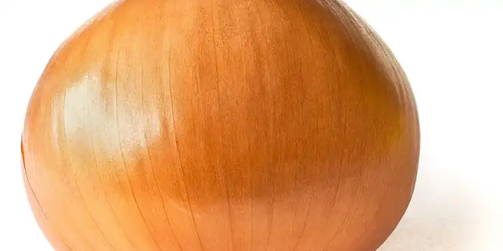
Frost dates vs hardiness zones vs day length Three different numbers describe your climate, and they do three different jobs - your zone, your frost dates, and your latitude. Most garden tools blur them into "your zone," which is wrong. Here's which is which.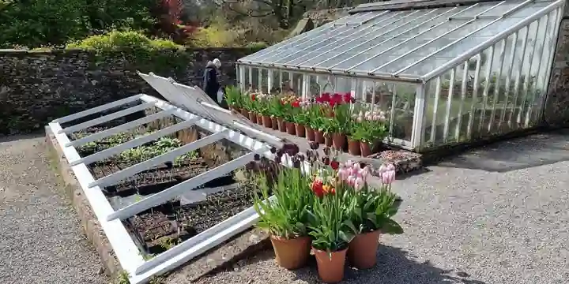
How to read a planting calendar A planting chart that says "sow in April" is wrong for most of the country. The skill worth having is reading any calendar as an offset from your own frost dates - here's how, at both ends of the season.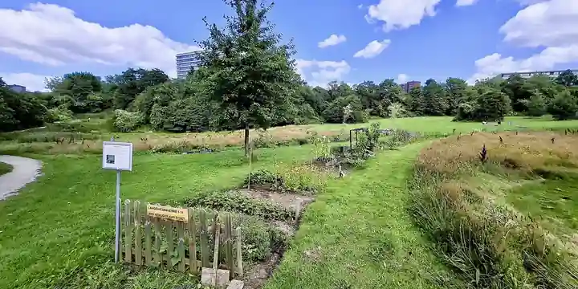
Where to put a garden - sun, water, and drainage The single biggest decision you make is where the garden goes, and you make it before you plant anything - how much sun vegetables need, why standing water is a dealbreaker, and how the site shapes the plan.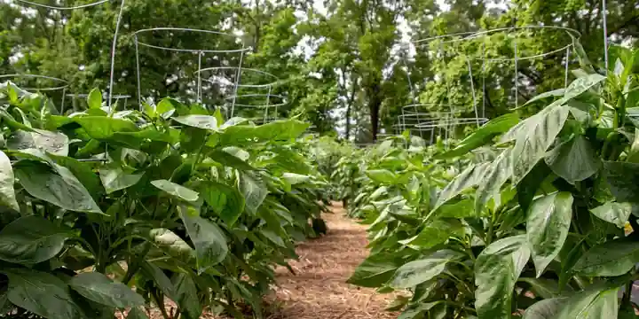
Field, in-ground bed, raised bed, or container - which to choose The four ways to hold a garden, what each one costs and buys, and how to pick the one that fits your yard, your soil, and how much work you want.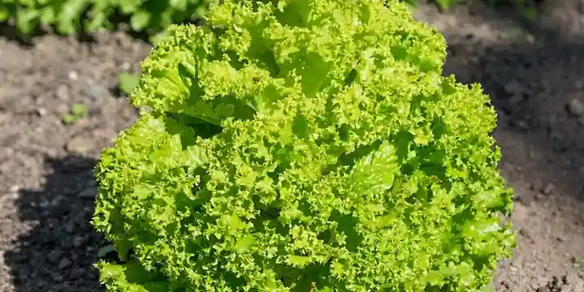
Plant your first bed, step by step A first-season walkthrough - pick a few forgiving crops, count from your frost dates, start what needs a head start, harden it off, and get it in the ground at the right time.
Know your ground · 8
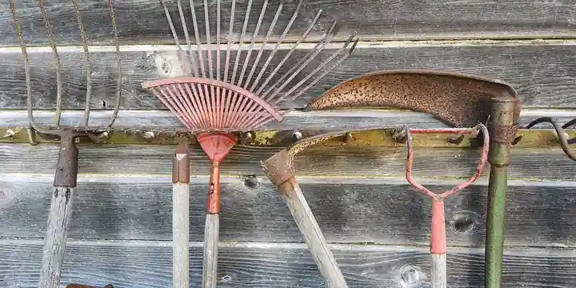
How to build a raised garden bed How wide, how long, how deep, and what to build it from - the one dimension that actually matters, why the rest is up to you, and how to fill it without wasting money.- Container vegetable gardening for beginners You can grow real food in pots on a patio, balcony, or step - here's how to pick the pot, what to fill it with, what to grow, and the one habit that decides whether it lives.
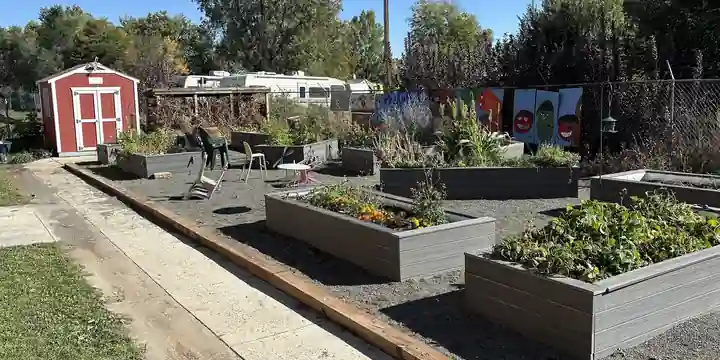
What to do with last year's raised bed soil Your raised bed soil isn't used up at the end of the season - here's why it settles, how to refresh it with compost, and why replacing it is almost never the answer.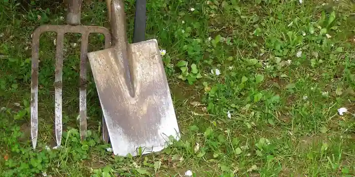
The soil test - the best $15 in gardening A soil test replaces guessing with knowing - what it measures, why no honest tool will hand you fertilizer numbers without one, and how to take one. The rare piece of garden advice that saves money.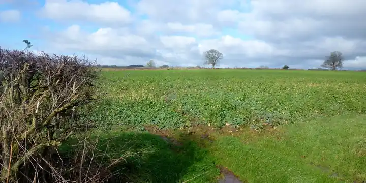
Cover crops and green manure for the home garden A cover crop is a plant you grow to feed the soil, not to eat - what they do, which kind fixes nitrogen and which just builds organic matter, and how to fit one into a small garden's off-season.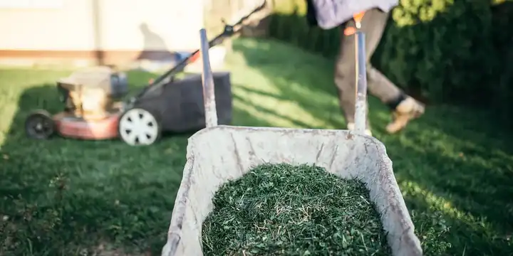
Do you need to rotate crops in a raised bed? Yes - the pests and diseases live in the soil, not the frame, so a raised bed needs rotating like any ground. Here's why, and why digging out the soil is the costly way to do the same job.- Crop rotation for the home garden Move crops by plant family so soil-borne pests and diseases can't settle in - what to rotate, how far apart, and what rotation can and can't do.
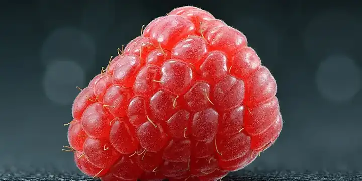
Don't plant berries where the tomatoes were - the rotation rule that rotation misses You can rotate perfectly, wait the full three years, clear every scrap of debris, and still kill a raspberry patch on day one. Verticillium does not respect plant families, it lives in soil for years, and once the plant is in the ground there is nothing you can do about it.
What to grow · 16
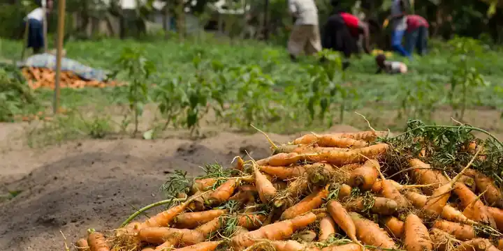
Growing carrots and other root vegetables Roots are among the easiest crops to grow and the easiest to get subtly wrong - here's the loose soil they need, why feeding them like leafy crops backfires, and what actually causes forked carrots.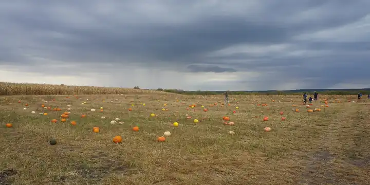
Bush or vining? Why the same squash seed needs one metre or four Two packets can say "squash", be the same species, and produce plants that need four times the room. The word on the packet that actually decides how much space you need is not the one most people read - and in a small bed, getting it wrong swallows the whole thing.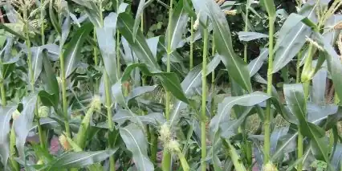
How to build a Three Sisters mound What the mound is for, how big to shape it, and the staggered order to plant corn, beans, and squash - with the exact block the corn needs to pollinate.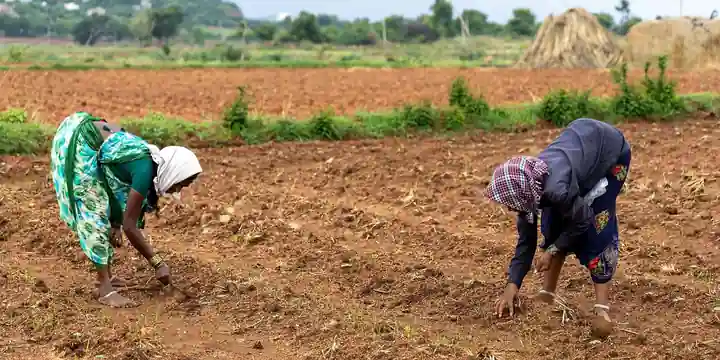
Do beans really feed the corn? The most repeated fact about the Three Sisters - that the beans fix nitrogen to feed the corn beside them - is half true, and the half that's wrong is the half people rely on. Here's what actually happens.- What is a milpa? The fuller system behind the Three Sisters The Three Sisters is the famous three-crop version; the milpa it comes from is a whole interplanted field. What the milpa adds, what it looks like planted, and how to grow a piece of one.
- The fruit tree guild, role by role - which parts are load-bearing and which are folklore The permaculture apple-tree guild is drawn the same way on every blog - comfrey mining minerals, garlic repelling borers, autumn olive fixing nitrogen. Some of it is real and some has nothing behind it, so here is the whole thing graded, claim by claim.
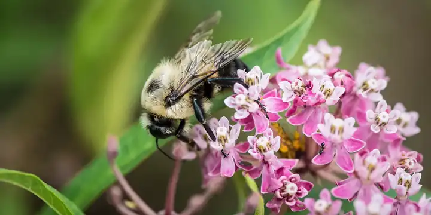
Why is my squash not setting fruit? Pollination for the home gardener Lots of flowers and no fruit is usually not a disease - it's pollination. How squash, cucumbers, corn, and the crops that need a partner actually get pollinated, and the honest short list of what you can do about it.- Do plants really affect their neighbours? Allelopathy, living mulch, and what the evidence supports Some plants genuinely change the ground for the plants beside them - one of them will kill your tomatoes. But the effects that are real look nothing like the companion chart, and the honest range runs from "this is fatal" to "nobody has actually tested it."
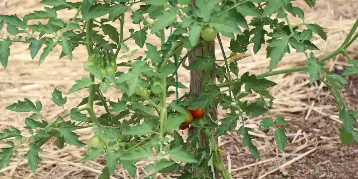
Growing tomatoes - the crop that needs a decision before a seed A tomato is either determinate or indeterminate, and that one word on the label decides its spacing, its support, and when it stops setting fruit. Determinate kinds stay short and ripen in a rush; indeterminate kinds climb all season and need real height.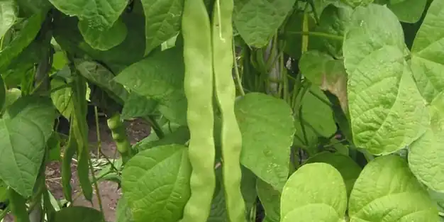
Growing beans - pole or bush, and what the roots leave behind The same bean species is either a knee-high plant that finishes in eight weeks or a three-metre vine that climbs all season - the packet decides. How to grow both, why beans want no fertiliser, and what actually happens to the nitrogen everyone talks about.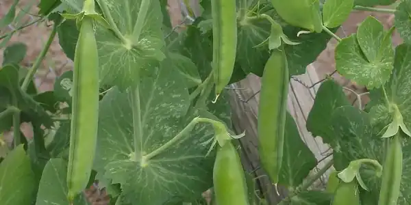
Growing peas - the crop that wants to be planted too early Peas are the one vegetable that punishes waiting. They go in weeks before the last frost, climb with tendrils instead of twining, and quit the moment summer arrives - which changes what kind of support they want and how you schedule the whole row.- Growing cucumbers - a vine that pays you back for a trellis Cucumbers grow fine on the ground and better in the air - straighter fruit, drier leaves, a quarter of the footprint. What the vining-or-bush choice changes, why picking daily is not optional, and why a bitter cucumber is a stressed one.
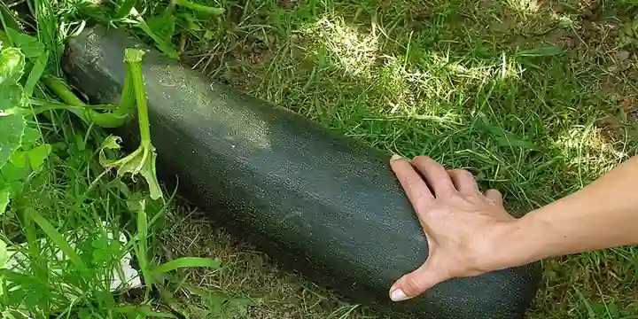
Growing summer squash - two plants is plenty The most over-planted vegetable in the home garden. Why a zucchini buries a household, what the bush-or-vining word changes about the space it takes, why the first flowers fall off, and when a trellis makes sense for a squash at all.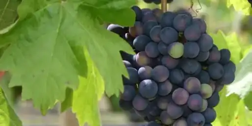
Growing grapes - a decade-long tenant that arrives before its house A grape is not a vegetable-bed decision. It lives twenty years or more, needs its trellis built before planting day, spends its first two seasons growing wood instead of fruit, and asks for the one job most gardeners skip - real pruning. What that commitment looks like, honestly.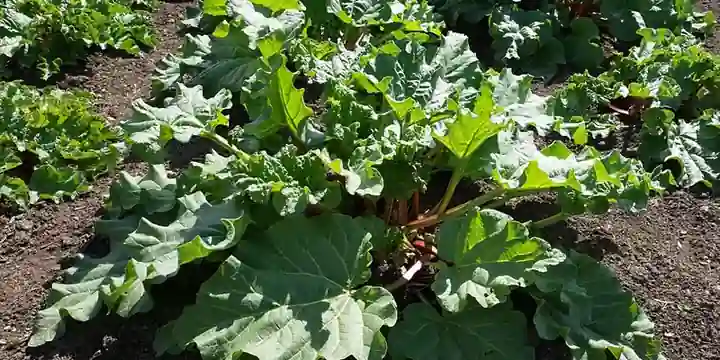
Rhubarb - the stalks are food, the leaves are poison Rhubarb is one of the easiest perennials you can plant, and the only common garden vegetable where part of what you harvest is genuinely toxic. Which part, why, and the two things about it that get repeated online without evidence.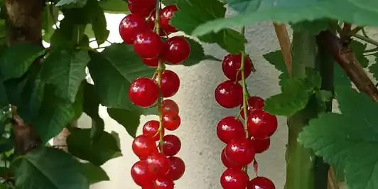
Currants and gooseberries - check your state before you plant These are among the few fruits that crop well in part shade, and they are also the only garden fruit with a legal history. A federal ban, lifted in 1966, and a handful of states that still restrict planting - here is what the restriction is actually protecting, and how to plant around it.
Keep it alive · 8
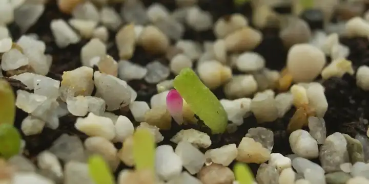
Starting seeds indoors Which crops actually need a head start, how many weeks before your last frost to sow them, and the honest list of what you should just sow straight in the ground instead.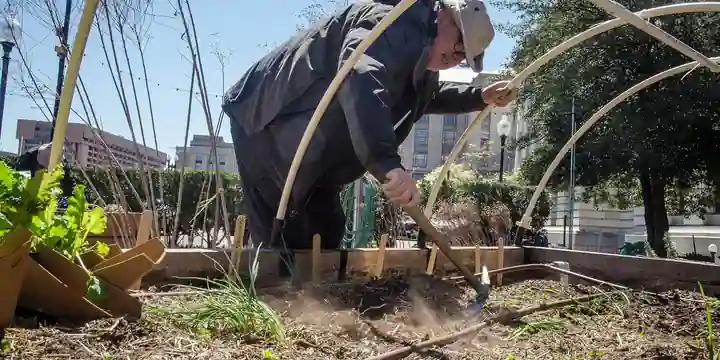
How to transplant seedlings Moving a seedling into the garden is where a lot of them get set back or killed. How to harden off, handle, and set a transplant - plus the one crop you plant deeper than it grew, and the reason.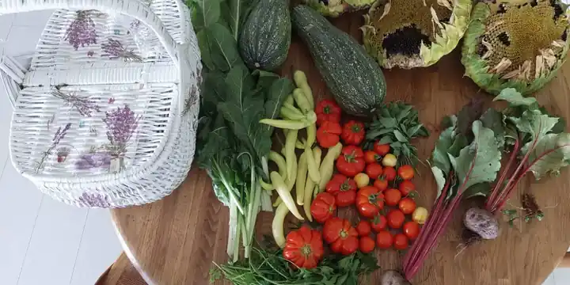
Succession planting - a steady harvest instead of a glut Plant all your lettuce at once and you get a wall of it for two weeks, then nothing. Succession planting - small, staggered sowings - gives you a steady supply of the crops you eat continuously.- How to water a vegetable garden How often, how much, and how - the honest answers. Why no one can hand you a watering schedule, the finger test that replaces it, and the two habits (deep, and at the base) that prevent most trouble.
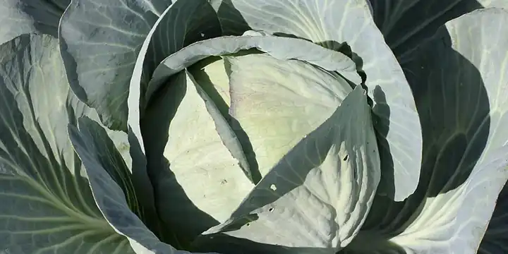
Floating row covers - frost protection, pest exclusion, and the one rule A lightweight fabric that buys you a few degrees of frost, keeps pests off physically, and warms the soil - plus the one hard rule about when you have to take it off, or you'll get no fruit.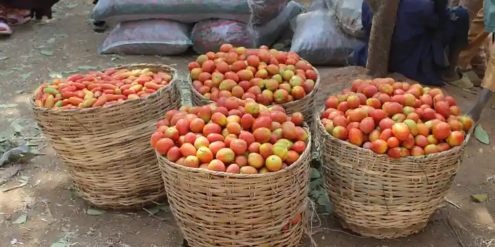
Why won't my tomatoes set fruit? Heat, blossom drop, and the fix that isn't shade A tomato plant covered in flowers that drop without making fruit is usually being told to stop by the temperature - and specifically by the night temperature, which is why the shade cloth everyone reaches for does nothing.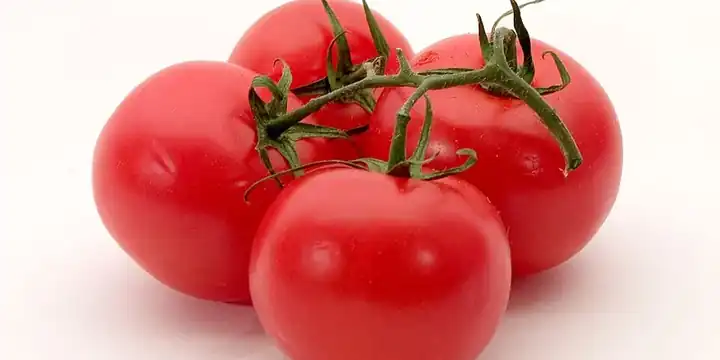
Blossom-end rot - why tomatoes rot at the bottom, and what actually stops it The sunken black patch on the bottom of your tomatoes isn't a disease and usually isn't a calcium shortage - so the eggshells and Epsom salts won't help. Here's what it really is and the fix that works.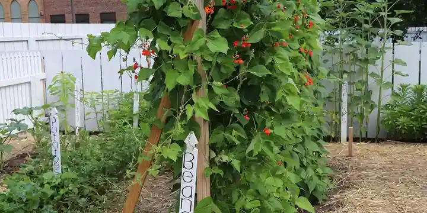
Staking, caging, and trellising - how to support your plants Some plants can't hold themselves up, and left on the ground they sprawl, rot, and yield poorly. Which crops need support, what kind, and why you put it in the day you plant - not the day it flops.
Myths, honestly · 4
- Soil myths - sand in clay, coffee grounds, banana peels, and what actually works The most-repeated soil advice on the internet is free, sounds sensible, and mostly does nothing. One popular tip makes your soil measurably worse. Here is each one with what is actually known, and the boring thing that does work.
- Companion planting, honestly - what the evidence actually says Most companion-planting chart entries are tradition, not research. Here's the short list of pairings that hold up, the famous ones that don't, and how to tell which is which.
- Homemade pest and weed remedies - what backfires, what fades, and what actually works Dish soap, vinegar, eggshells, human hair. The kitchen-cupboard remedies are free and feel gentle, and the one most often recommended as the safe alternative is the one that damages your plants. Each with what is actually known, and the thing that works instead.
- Garden folklore - moon planting, midday watering, and talking to your plants Three old beliefs that cost nothing to hold, except that one of them makes people leave a wilting plant unwatered in a heatwave. What is actually known about each, and why the harmless ones are still worth getting right.